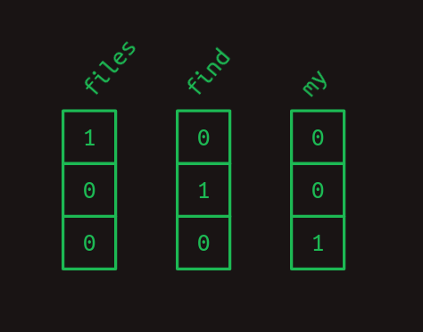
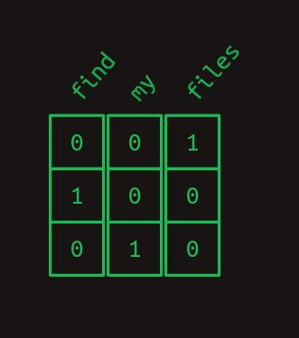
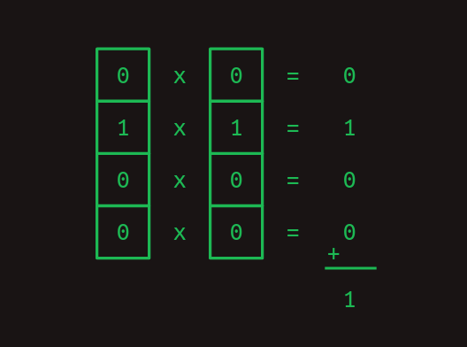
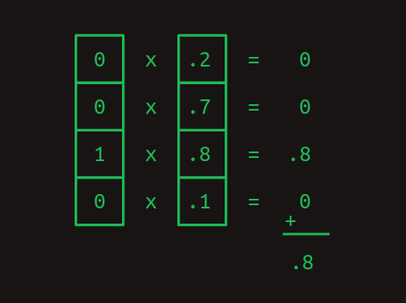
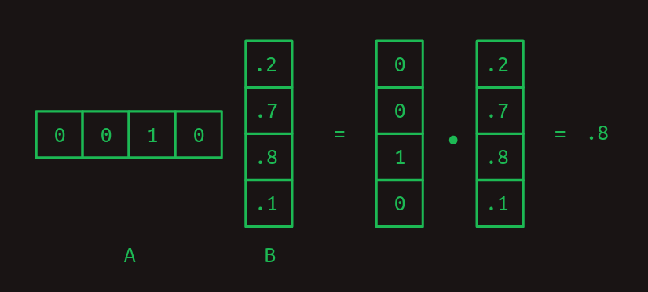
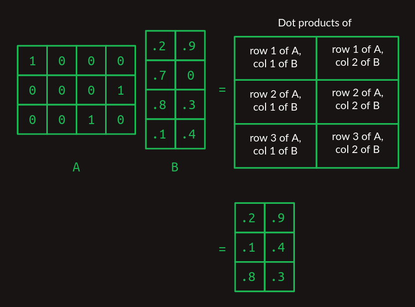
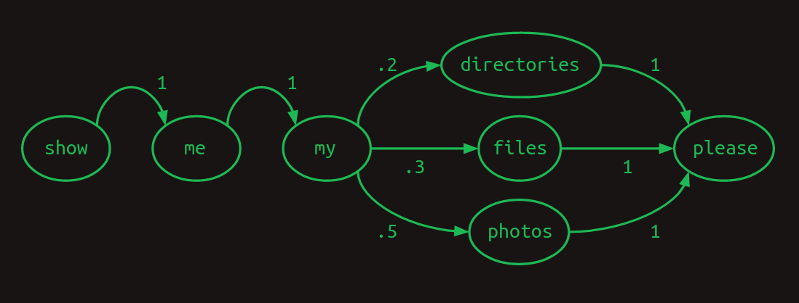
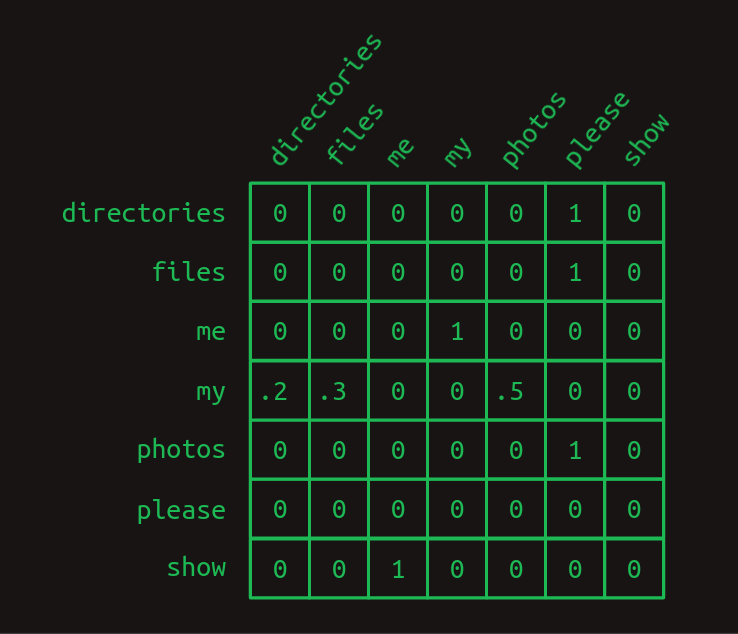

Transformers from scratch#
In this notebook, we will implement transformers network from scratch, but before we implement that, we will first understand what are transformers and basic building blocks of them. So to start with, we will first understand those basic building blocks.
Before we deep dive, let’s understand basic components
One hot encoding#
Computer understands numbers (that too binary), but language models takes texts, and we need to convert them to numbers first, so that we can perform mathematical operations on them,so how do we logically convert them (in a non random way) ?
Imagine all the words that we know in English language are there in a Dictionary and every word is numbered (let’s say dictionary has some number of words, or say vocabulary, say 10000 words in total), our task is whatever sentence we speak or write, we look the numbers corresponding to the word in dictionary and right them on paper, so essentially we converted every word to a number and a sentence to a sequence of numbers. foe example: dictionary has numbering as files = 1, find = 2, and my = 3. Then the sentence “Find my files” will be repesented as [2,3,1]
But for computers, these numbers still dont make sense, it has to be a binary representation, there’s another format that’s even easier for computers to work with, one-hot encoding.
In one-hot encoding a symbol is represented by an array of mostly zeros, the same length of the vocabulary, with only a single element having a value of one. Each element in the array corresponds to a separate symbol.
Another way to think about one-hot encoding is that each word still gets assigned its own number, but now that number is an index to an array. Here is our example above, in one-hot notation.

So the sentence becomes sequence of arrays

Read more about vectors here: Vectors
Dot product#
One really useful thing about the one-hot representation is that it lets us compute dot products. To get the dot product of two vectors, multiply their corresponding elements, then add the results.
Dot products are especially useful when we’re working with our one-hot word representations. The dot product of any one-hot vector with itself is one.

And the dot product of any one-hot vector with any other one-hot vector is zero.

The previous two examples show how dot products can be used to measure similarity. A one-hot encoded word can be compared against it with the dot product to show how strongly that word is represented.

Matrix multipication#
The dot product is the building block of matrix multiplication, a very particular way to combine a pair of two-dimensional arrays.

When number of rows and columns increases, matrix multipications starts stacking up

Sequence models#
Let’s consider our original sentence that we converted into numbers by looking into vocabulary and how combination of every word follows a sequence of numbers. Consider, if we fed this sentence to a computer (or say a human) and ask to predict the next word for it, what process it would follow to determine the next sequence and how do we represent the decision.
One useful way to represent sequences is with a transition model. For every word in the vocabulary, it shows what the next word is likely to be. If users ask about photos half the time, files 30% of the time, and directories the rest of the time, the transition model will look like this. The sum of the transitions away from any word will always add up to one.

This particular model is called a Markov chain, because it satisfies the Markov property that the probabilities for the next word depend only on recent words. More specifically, it is a first order Markov model because it only looks at the single most recent word. If it considered the two most recent words it would be a second order Markov model.
Above transition model can be represented in a matrix form too

Find the row that corresponds to the word you’re interested in. The value in each column shows the probability of that word coming next. Because the value of each element in the matrix represents a probability, they will all fall between zero and one. Because probabilities always sum to one, the values in each row will always add up to one.
Prediction using above model depends only on the current word, prediction is very hard, it is like asking, give world “I” , predict what comes next. Our chance may get better, if we include two words (Current + Past) to predict the future word, then that becomes Second order sequence model.
Second order sequence model with skips#
A second order model works well when we only have to look back two words to decide what word comes next. What about when we have to look back further? Imagine we are building yet another language model. This one only has to represent two sentences, each equally likely to occur.
Check the program log and find out whether it ran please.
Check the battery log and find out whether it ran down please.
In this example, in order to determine which word should come after ran, we would have to look back 8 words into the past. If we want to improve on our second order language model, we can of course consider third- and higher order models. However, with a significant vocabulary size this takes a combination of creativity and brute force to execute. A naive implementation of an eighth order model would have N^8 rows, a ridiculous number for any reasonable vocubulary.
Instead, we can do something sly and make a second order model, but consider the combinations of the most recent word with each of the words that came before. It’s still second order, because we’re only considering two words at a time, but it allows us to reach back further and capture long range dependencies. The difference between this second-order-with-skips and a full umpteenth-order model is that we discard most of the word order information and combinations of preceeeding words
Language understanding is not straight forward, sometimes the dependency of the word present in the last maps/links to the word at first position in a really long sentence, to maintain this dependency while maintaining other dependencies is impossible with simple sequence to sequence models.